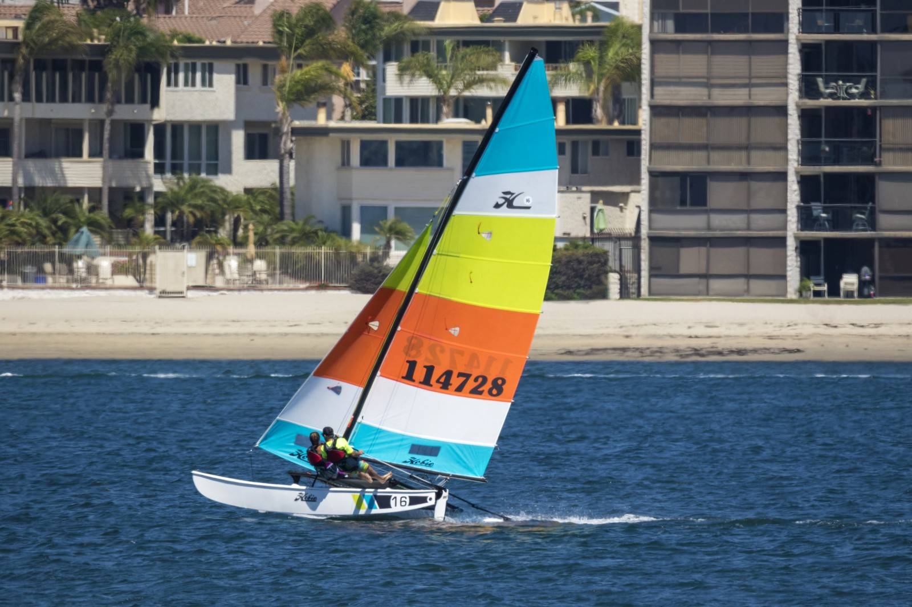

Successfully Complete LC101 Memphis 2019
This is my short term goal. Simple, though not easy. It can be done by July 2019.So far, in the midst of Unit, I've learned about computer programming, Python, HTML, Git, and Github. Before this unit is over I have the opportunity to learn MySQL and Flask. And during Unit 3 I could learn either Java or C#.
I am very excited in my journey in being comfortable in programming. This class could change my life!
Become a Programmer
This ties into the todo above, and programmer is used as a catch-all term for any related career. I primarily want to to work with JavaScript.
Sail the Seas
From short term to long term. Sailboats are seemingly eco-friendly transportation and you get to be out on the water, thus they are awesome. I would love a sub 36-foot liveaboard, but I'll probably only get to touch this. But it will be awesome, plus it can fit inside or on the Subaru.
 © 2019 Hobie Cat Company. All rights reserved.Speak a Foreign Language
Not only do I want to be fluent in JavaScript, but I want to converse with programmers and non-programmers across the globe.I'm currently only fluent in English. By just reading this page I hope you can tell. I've touched on Kiswahili(Swahili) and Español (Spanish) in the past.
Travel America in a RV
America is a big country, so before I set the seas I want to explore as much of my homeland as possible. Perhaps I will even add our neigboring countries to it, going as far my tank and my currently non-existent passport will take me.